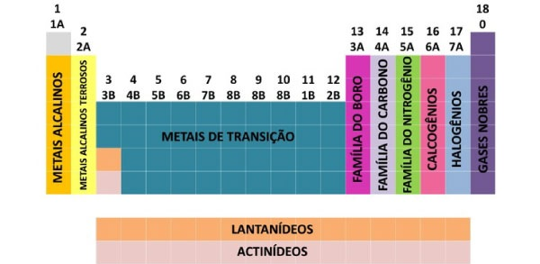
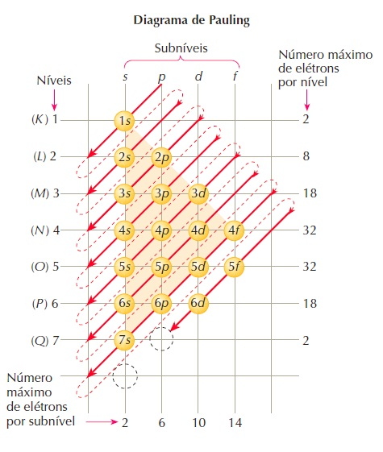
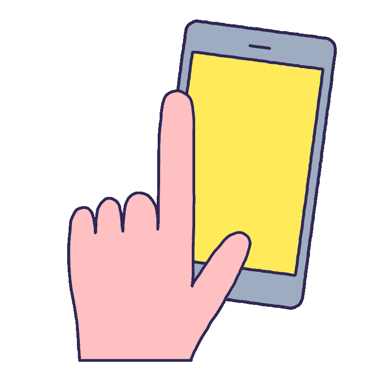
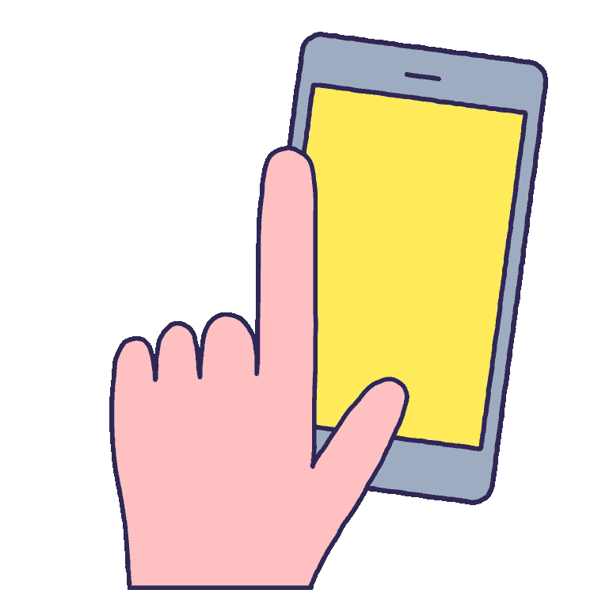

Projeto introdução à web - Labenu
Projeto desenvolvido utilizando Javascript "vanilla", HTML5 e CSS3.
Não foram utilizadas bibliotecas, frameworks ou códigos copiados de terceiros, com a intenção de práticar o conhecimento adquirido durante o curso de introdução à web Labenu, tendo como exceção o menu mobile em CSS puro que, para proteger minha sanidade mental das armadilhas do CSS, foi criado seguindo o video: Responsive Navigation Menu Bar + Hamburger Menu Toggle - Only with CSS
Conhecimentos e técnicas aplicadas:
JavaScript
- JavaScript - Criação e manipulação de Arrays e Objetos
- JavaScript - For Loops, map(), filter()
- JavaScript - Condicionais if/else, if ternário e switch case
- JavaScript - Escopo de variáveis e funções
- JavaScript - Funções nomeadas, anônimas e arrowfunctions
- JavaScript - Manipulação de Strings e o básico de expressões regulares (RegEx)
- JavaScript - TemplateString
- JavaScript - Event listeners
- JavaScript - Manipulação da árvore DOM
- JavaScript - Básico de animação através de manipulação elementos no DOM
CSS
- CSS - Posicionamento e alinhamento utilizando Flex e Grid
- CSS - Utilização de variáveis
- CSS - Responsividade através de media queries e funções min/max()
- CSS - Estilização
HTML
- HTML 5 semântico
Uma explicação sobre o conteúdo do projeto
O projeto cria uma lista com os elementos da tabela periódia. Para evitar que o projeto se tornasse muito longo não foram cadastrados todos os elementos, apenas os pertencentes aos antigos grupos 'A'.
A função criadora
Foi utilizada no JavaScript uma função para criar objetos e adicioná-los a um array (.push). Os objetos
são adicionados somente se determinadas condições forem verdadeiras (boolean "true" ou "false").
Esse array criado torna possível realizar buscas por elementos específicos através do nome ou símbolo
(.filter), encontrando o elemento correto mesmo quando o usuário não utiliza a acentuação correta ou
utilize letras maiúsculas ou minúsculas. Ex.: Buscar por "Lítio", "Litio" ou "lítio" retorna o mesmo
objeto.
É possível filtrar os objetos por suas propriedades, é dessa forma que foi feita a separação dos
elementos por grupos da tabela periódica e a listagem de elementos radioativos ou sintéticos.
Objetos que possuem em sua propriedade "radioativo: true" foram programados para receber um pequeno
ícone em sua imagem.
O diagrama de Linus Pauling
Também foi desenvolvida no JavaScript uma função que, ao receber um número (número de elétrons do elemento químico), cria automaticamente o diagrama de Pauling. Uma outra função trabalha o array resultante e o prepara para ser exibido na página com a formatação correta.
Nevagação na página principal
Na tela principal são listados todos os elementos, separados em seus grupos. Para navegar entre os
grupos forma desenvolvidas 2 soluções:
- para dispositivos com teclado físico utiliza-se as teclas "seta direita" e "seta esquerda"
- para dispositicos com tela touch, utiliza-se "swipe" para direta ou esquerda.
 

Este foi meu primeiro projeto, cometendo erros e aprendendo muito com eles. Para detalhes do código e da lógica aplicada em cada etapa da criação visite o meu blog!